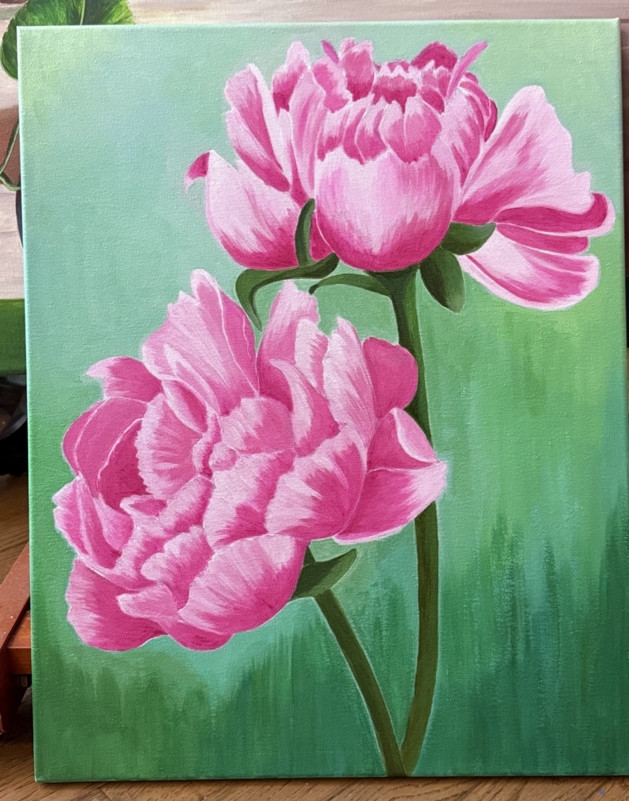
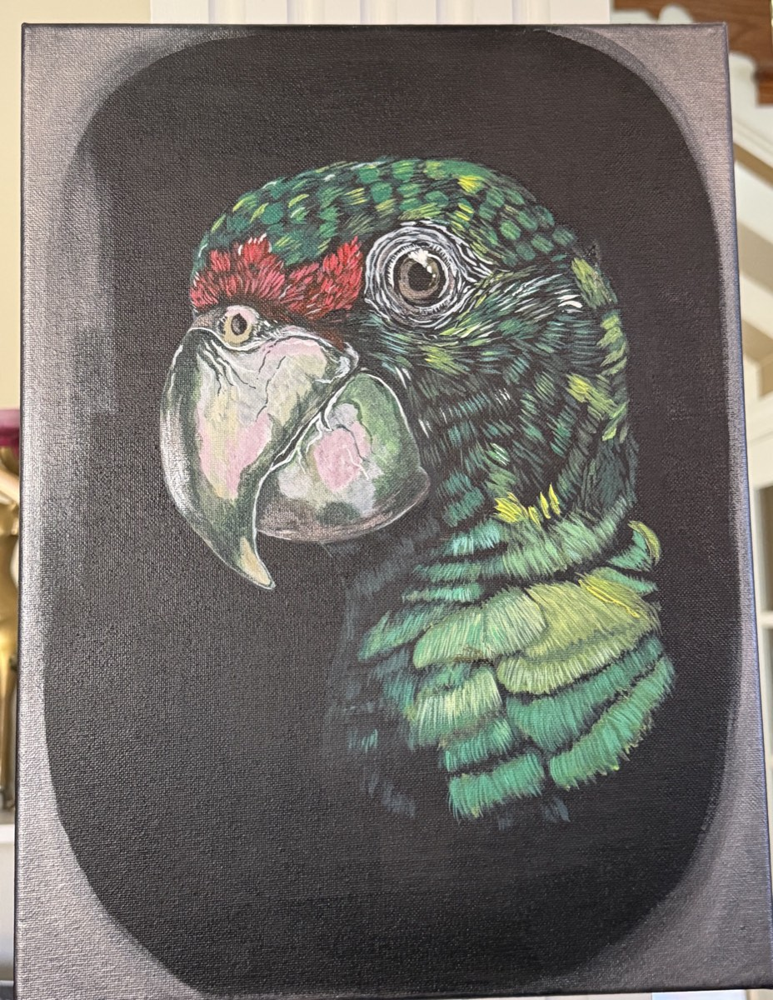
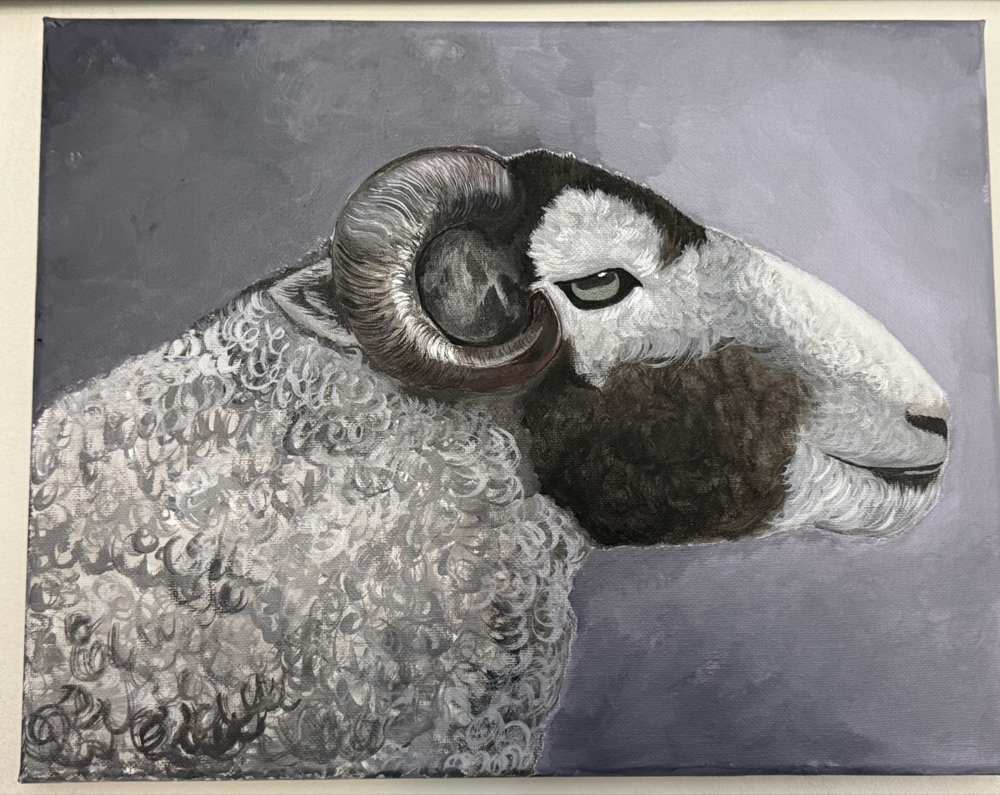
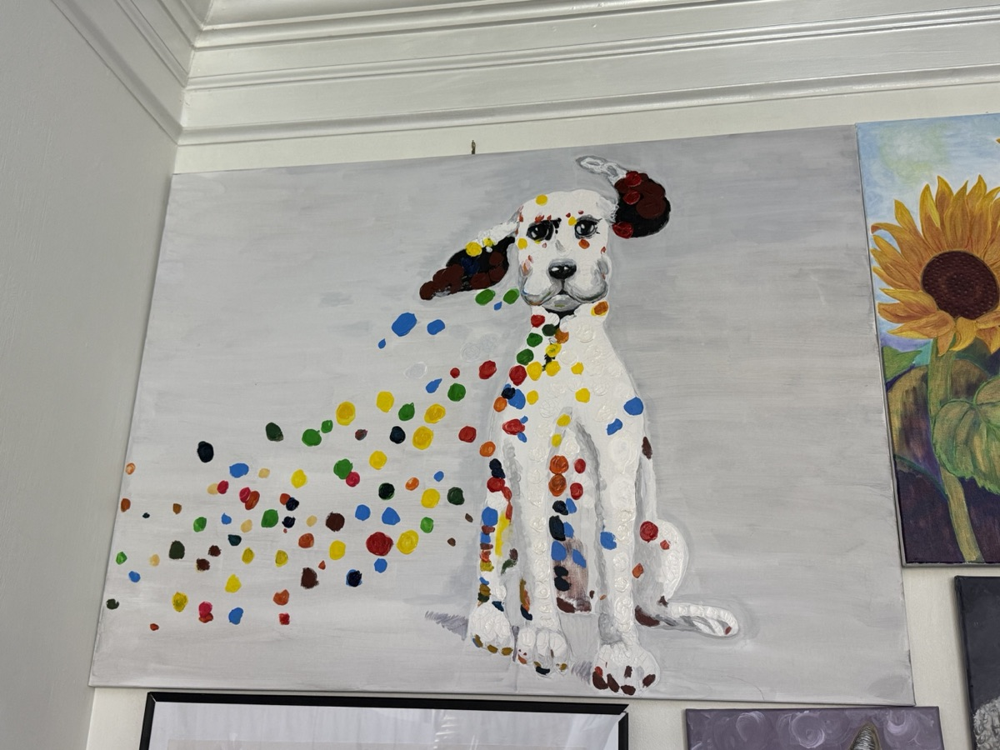
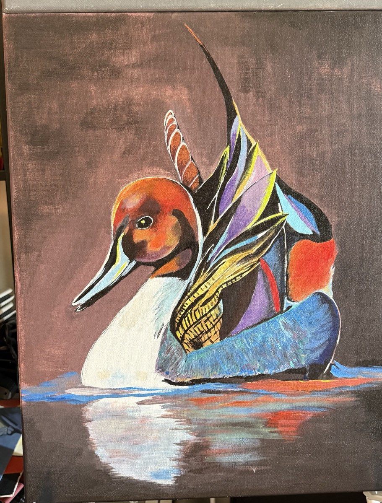
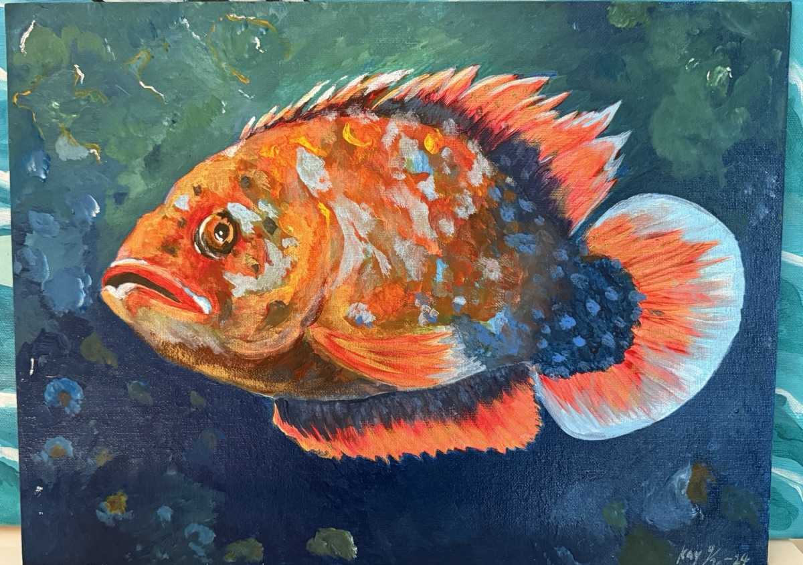

Drawing
素描
1 work 1 件作品KAY
Two Dogs and Cherry Blossoms, n.d.
双犬与樱花，年份不详
Painting
绘画
16 works 16 件作品

KAY
Lemons, n.d.
柠檬，年份不详
KAY
Tomatoes on the Vine, 2020
藤上番茄，2020
KAY
Pomegranates, n.d.
石榴，年份不详

KAY
Pears, 2022
梨，2022
KAY
Red Grapes, 2024
红葡萄，2024

KAY
Figs, 2023
无花果，2023

KAY
Peonies, n.d.
牡丹，年份不详

KAY
Peacock, n.d.
孔雀，年份不详

KAY
Parrot, n.d.
鹦鹉，年份不详

KAY
Ram, n.d.
公羊，年份不详

KAY
Spotted Dog, n.d.
彩点狗，年份不详

KAY
Pintail Duck, n.d.
针尾鸭，年份不详
KAY
Redfish, n.d.
红鼓鱼，年份不详

KAY
Rockfish, 2024
石斑鱼，2024

KAY
Goldfish, n.d.
金鱼，年份不详

KAY
Cabin in Winter, n.d.
冬日木屋，年份不详